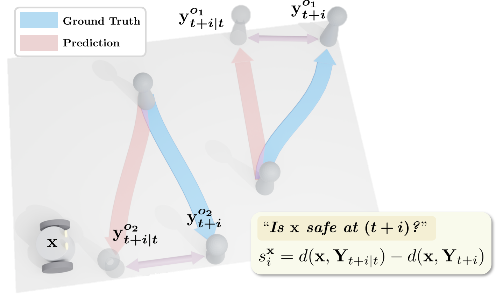
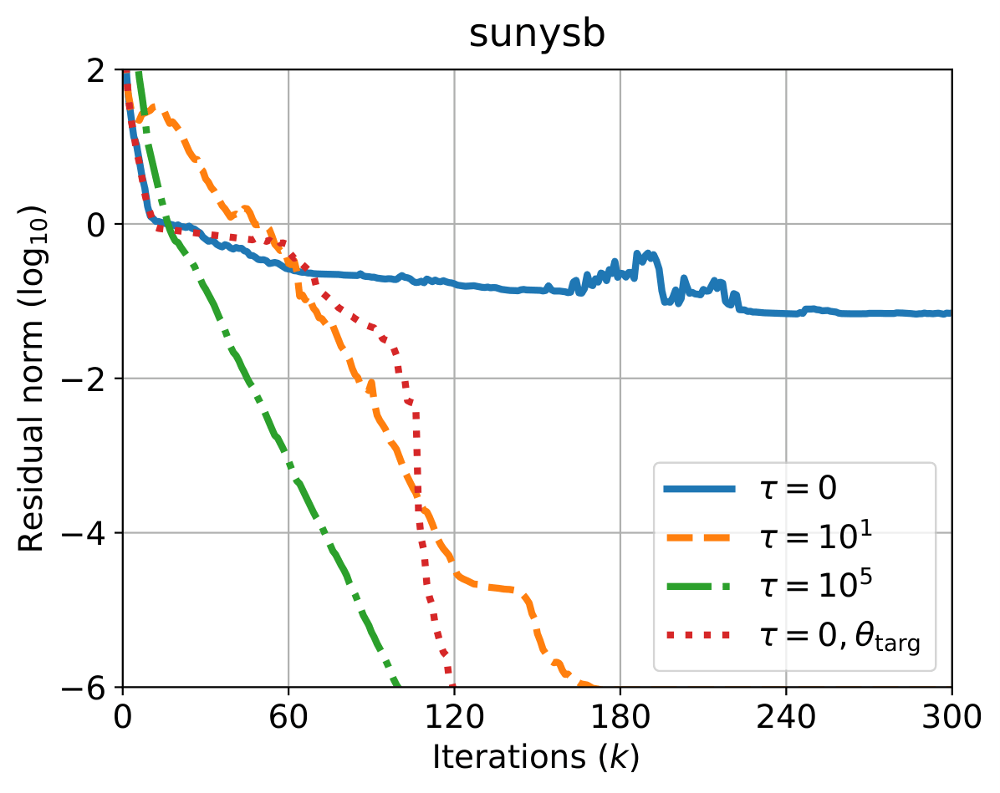
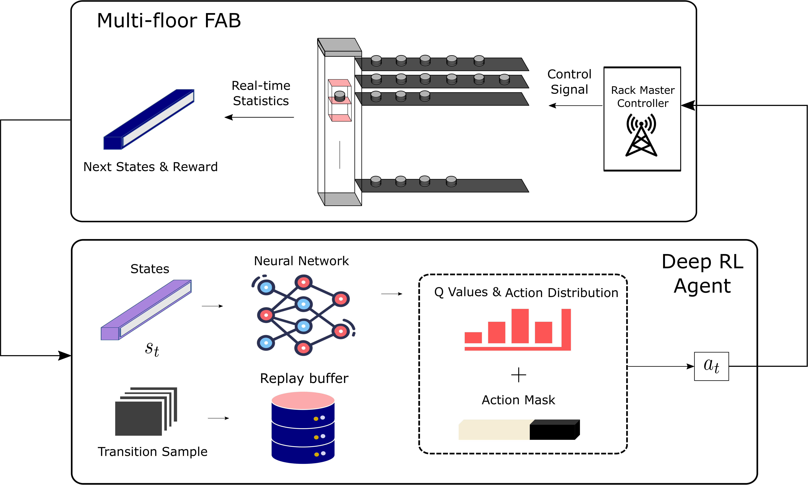

My Research lies at the intersection of control theory, reinforcement learning, and robotics. Broadly, I study how data-driven approaches and principled optimization can be combined to enable safe, efficient, and adaptive autonomy in complex environments. My work has explored topics including model predictive control, meta-reinforcement learning, conformal prediction for safety-aware navigation, and structural analysis of multi-task MDPs. I am particularly interested in devloping methods that integrate prediction, uncertainty quantification, and control to build reliable real-world robotic systems.
I am currently a graduate research intern at Naver Labs. (~May, 2026)
Koopcast: Koopman Operator-Based Trajectory Forecasting
Jungjin Lee, Jaeuk Shin, Gihwan Kim, Joon Ho Han, Insoon Yang
IEEE Conference on Robotics & Automation (ICRA), 2026
Paper
We develop a Koopman-operator-based pedestrian trajectory forecasting model that achieves fast inference while maintaining competitive performance.

Egocentric Conformal Prediction for Safe and Efficient Navigation in Dynamic Cluttered Environments Jaeuk Shin, Jungjin Lee, Insoon Yang
IEEE Conference on Decision and Control (CDC) , 2025
Paper
/
Github
We develop a conformal prediction scheme for direct safe-set calibration that maintains theoretical guarantees while improving efficiency over prior CP-based control methods.
On task-relevant loss functions in meta-reinforcement learning Jaeuk Shin, Giho Kim, Howon Lee, Joonho Han, Insoon Yang
Annual Learning for Dynamics & Control Conference (L4DC) , 2024
Paper
/
Github
Incorporating value-function information into the model-learning objective significantly accelerates meta-RL.
Multiparametric Analysis of Multi-Task Markov Decision Processes: Structure, Invariance, and Reducibility
Jaeuk Shin, Insoon Yang
IEEE Control System Letters, 2024 (Selected for presentation at CDC'24)
Paper
We present a geometric perspective on understanding multi-task Markov decision processes. The resulting structure of the task space provides a unifying view of reward shaping and task identification, enabling us to address questions arising in zero-shot learning.

Anderson acceleration for partially observable Markov decision processes: A maximum entropy approach Mingyu Park*, Jaeuk Shin*, Insoon Yang
Automatica, 2024
Paper
/
Github
Soft regularization of approximate POMDP operators enhances the effectiveness of Anderson acceleration.

Control of fab lifters via deep reinforcement learning: A semi-MDP approach
Giho Kim*, Jaeuk Shin*, Gihun Kim, Joonrak Kim, Insoon Yang
IEEE Transactions on Automation Science and Engineering Information for Authors (T-ASE) , 2023
Paper
/
Github
A semi-MDP formulation of Q-learning enables the solution of large-scale industrial problems. (collaboration with SK Hynix)
Infusing model predictive control into meta-reinforcement learning for mobile robots in dynamic environments
Jaeuk Shin, Astghik Hakobyan, Mingyu Park, Yeoneung Kim, Gihun Kim, Insoon Yang
IEEE Robotics and Automation Letters (RA-L) , 2022 (Selected for presentation at IROS'22)
Paper
/
Github
We present MPC-PEARL, a novel meta-RL scheme that leverages MPC to rapidly generate faithful yet complex local behaviors during training. This compensates for the slow initial learning of meta-RL algorithms, while its myopic tendency can be addressed through RL.
Hamilton-jacobi deep Q-learning for deterministic continuous-time systems with lipschitz continuous controls
Jeongho Kim, Jaeuk Shin, Insoon Yang
Journal of Machine Learning Research (JMLR), 2021
Paper
/
Github
Starting from continuous-time HJB equations, we derive HJDQN, a continuous-time Q-learning method. This eliminates the need for a separate actor module and ensures smooth action trajectories.
{kind=link}